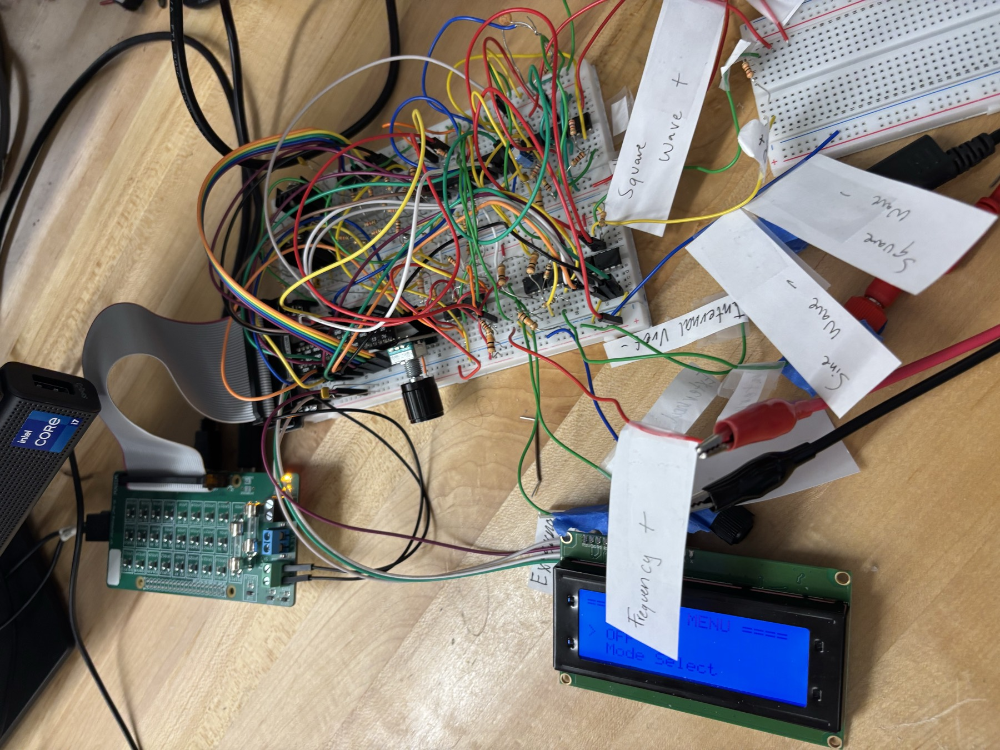
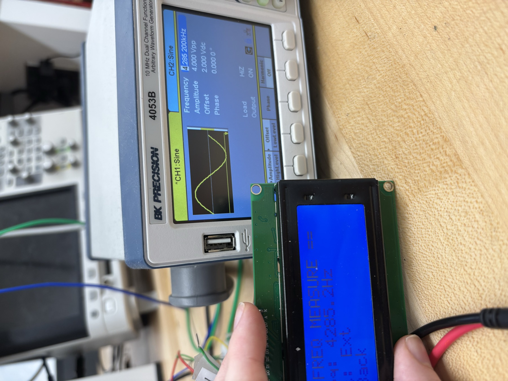

MultitoolBench
A four-mode multitool bench: function generator, voltmeter, ohmmeter and DC reference, on a four-layer board. Five of us built it; I was hardware lead and did the analog design. This page covers the parts I worked on.
Problem
The course rule: no instrumentation ICs. We couldn't buy the measurement.
No ADC chip, no dedicated measurement front end. If the instrument needed to measure a voltage, we had to build the circuit that measures voltage ourselves. A Raspberry Pi has no analog input at all, so none of this could be a library call.
Plan
The three circuits I was responsible for.
Voltmeter: an ADC built from bare parts
The voltmeter is a 6-bit successive-approximation converter made from an R-2R resistor ladder and a comparator. The ladder, driven from six GPIO pins, generates a trial voltage. The comparator checks that trial against the unknown input and returns one bit. The Pi walks from the most significant bit down, keeping each bit that doesn't overshoot. Six comparisons give six bits, basically a binary search in hardware.
Normally you'd just use an off-the-shelf ADC chip. Building one instead taught me a lot about what's inside them: the ladder's output impedance, the comparator's offset and delay, the settling time between trials, and why six bits was as much resolution as this design could honestly claim.
Ohmmeter: a bridge swept until the comparator trips
The unknown resistor sits in a Wheatstone bridge balanced by a digital potentiometer in series with a fixed resistor. The Pi sweeps the potentiometer across its 128 steps while watching a comparator, and the step where the bridge balances gives the unknown value. Most of the design work went into picking the fixed series resistor, since it sets where the measurable window lands. I ended up at 430Ω, and measured the offset on the bench instead of assuming it.
Supply: a rail splitter instead of two supplies
The analog stages needed positive and negative rails from a single 24V input. A Class B rail splitter, with the output devices inside a feedback loop, holds a stable midpoint and provides the ±12V the rest of the instrument runs on.
Trials & Errors
We prototyped and probed every stage on the bench before doing the layout.

- Settling time was real. Stepping the ladder and reading the comparator immediately gave wrong answers. The ladder needs time to settle after each trial, and I had to find that number on a scope since no datasheet covers a circuit you built yourself.
- Comparator offset set the floor. The comparator's offset and delay, not the ladder, were what limited us to six usable bits.
- Layout took six versions. Most of what changed between versions was the layout and how practical the board was to assemble, not the schematic.
Result
A working instrument, and a much better understanding of what's inside the chips I used to take for granted.

